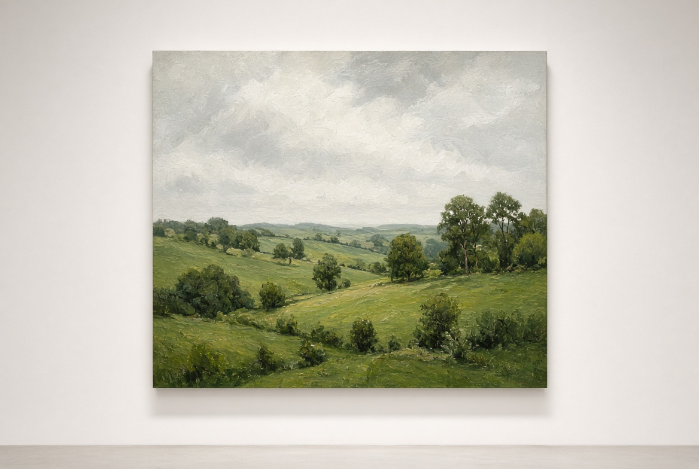
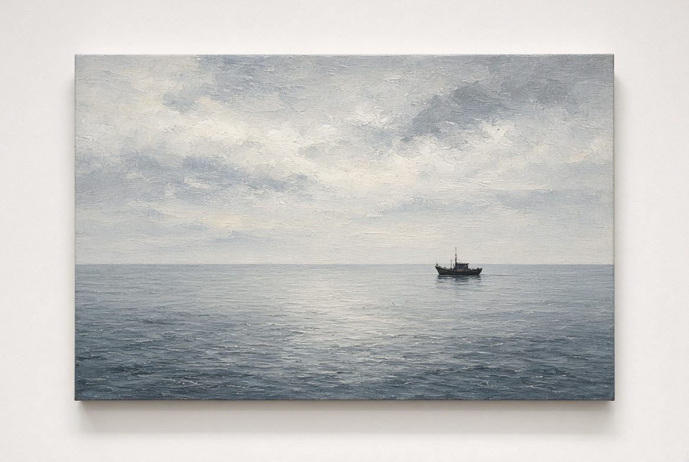

Artist
James Whitfield
Landscape · Dorset · b. 1974
James paints the weather more than the view. Fields, hedges and a short stretch of coast near Lyme, usually under high cloud. He works in oil, often beginning outside and finishing in the studio. His paintings have a particular softness and quietness.
